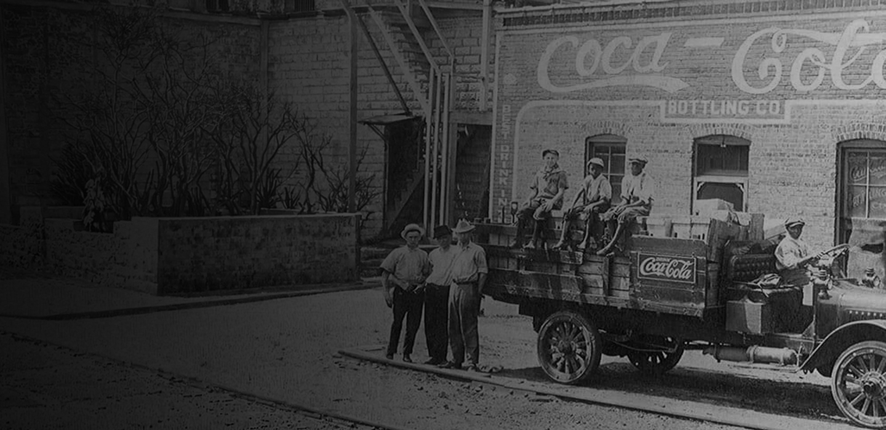
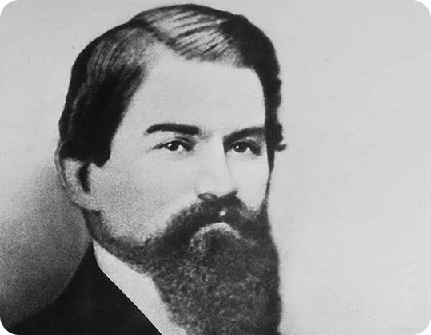
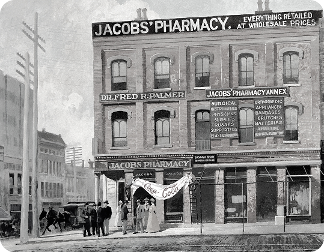
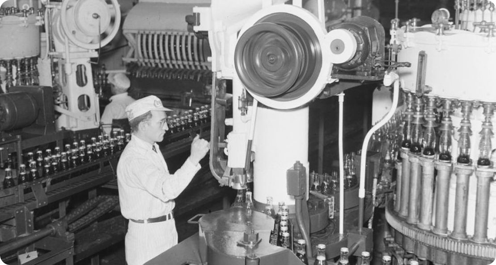
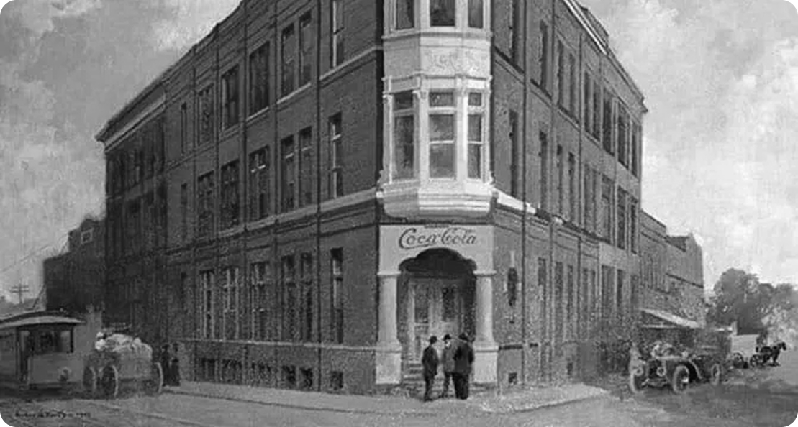
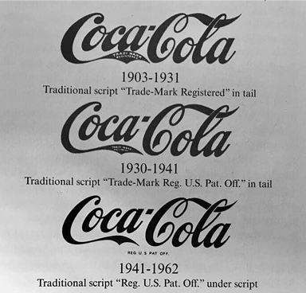

La storia
dietro Coca-Cola
Un nuovo inizio,
con la Contour Bottle.
Il prototipo originale del 1915 era molto più bombato al centro rispetto alla versione che conosciamo oggi, tanto da rendere difficile il movimento sulle linee di imbottigliamento dell’epoca.

John Stith Pemberton
Un farmacista di Atlanta.
Tutto ebbe inizio nel pomeriggio dell'8 maggio 1886, ad Atlanta, nel retrobottega della Jacobs’ Pharmacy. Il dottor John Stith Pemberton, un farmacista locale con un passato da veterano di guerra, stava lavorando alla creazione di uno sciroppo tonico che potesse offrire sollievo dai mali comuni dell'epoca, come l'esaurimento nervoso e il mal di testa.
Sperimentando con estratti di foglie di coca e noci di cola, Pemberton ottenne un liquido scuro e profumato che, una volta mescolato per puro caso con acqua gassata invece della solita acqua liscia, rivelò un sapore fresco e assolutamente inedito. Quel primo bicchiere, venduto per soli cinque centesimi, segnò l'umile debutto di quello che sarebbe diventato il marchio più iconico del pianeta.

Processo di imbottigliamento.
Un intuizione importante.
Nonostante l'invenzione del liquido si debba a Pemberton, l'identità visiva e il nome della bevanda sono farina del sacco del suo contabile, Frank M. Robinson. Fu proprio lui a intuire che due "C" graficamente eleganti avrebbero attirato l'attenzione nelle pubblicità, e utilizzando la sua raffinata calligrafia corsiva, disegnò a mano il marchio che ancora oggi campeggia su ogni confezione.
Robinson non fu solo un contabile, ma il primo vero custode e promulgatore del brand, comprendendo prima di chiunque altro che la Coca-Cola non era solo una bevanda, ma un'immagine da condurre ed imprimere per sempre nella mente dei consumatori.


Simbolo di uno stile di vita.
Tuttavia, il successo su larga scala arrivò solo quando la formula passò nelle mani di Asa Candler, un uomo d'affari dotato di un fiuto commerciale straordinario. Candler acquistò i diritti della società per una cifra che oggi appare ridicola, poco più di duemila dollari, e trasformò un rimedio da bancone in un fenomeno di massa. Attraverso strategie di marketing pionieristiche, come la distribuzione di coupon per assaggi gratuiti e la marchiatura di calendari, orologi e ventagli, Candler rese il nome Coca-Cola onnipresente in tutti gli Stati Uniti, gettando le basi per un impero commerciale senza precedenti.
La vera consacrazione globale avvenne però con la scelta di imbottigliare la bevanda. Inizialmente venduta solo alla spina, la Coca-Cola divenne portatile grazie all'intuizione di alcuni imprenditori che ne videro il potenziale domestico. Per proteggersi dalle tante imitazioni che sorgevano ovunque, l'azienda decise di creare un contenitore unico: nacque così, nel 1915, la celebre bottiglia "Contour". Il design era così distintivo che chiunque avrebbe potuto riconoscerla anche al buio, semplicemente toccandone le curve. Da quel momento, la bevanda non fu più solo un prodotto, ma un simbolo di stile di vita, capace di attraversare oceani e culture per diventare il ristoro universale che conosciamo oggi.

Storia d'identità
Il marchio Coca-Cola racconta una storia che va oltre la nascita di una bevanda: è la costruzione di un’identità visiva capace di attraversare generazioni, culture e linguaggi diversi. Dal marchio inconfondibile al colore rosso, dalla bottiglia sagomata alle campagne pubblicitarie, ogni elemento ha contribuito a rendere il brand immediatamente riconoscibile. Nel tempo Coca-Cola ha trasformato la propria immagine in un simbolo di condivisione, freschezza e familiarità, mantenendo una forte coerenza visiva e adattandosi ai cambiamenti della comunicazione contemporanea.
scopri di più